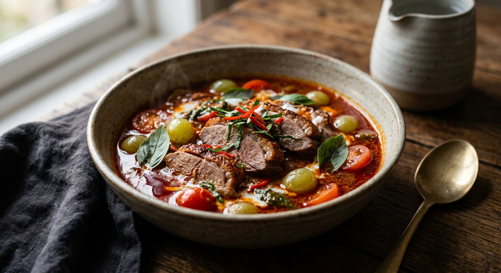

Cantonese roast duck simmered in a red coconut curry with sour pineapple, cherry tomatoes, red grapes and pea aubergines — fruit, not vegetables, does the work of cutting the duck's fat.

The name reads simply: แกงเผ็ด (kaeng phet) is the hot red curry, and เป็ดย่าง (pet yang) is roast duck — the Cantonese-style bird hanging in every Chinatown shop window, lacquered and smoked. The dish is the meeting point of the two: a red curry built around an already-cooked duck, where the curry's job is not to cook the meat but to dress it.
Aroifin's editors note you rarely see the dish for sale — roast duck is one of the pricier proteins, so the curry stays a home or special-occasion dish. But it is fast: with a shop-bought duck, the whole pot comes together in half an hour. Phol Food Mafia's recipe, from the TV cook อาจารย์ศรีสมร คงพันธุ์, adds the historical detail — the dish was originally called simply แกงแดง (kaeng daeng, "red curry"), before the roast duck claimed the name.
The defining move is the fruit. Where a chicken red curry would carry bamboo shoots or aubergines, this one carries pineapple, tomatoes and — in several sources — red grapes, simmered until the curry turns genuinely sweet-sour. Every source explains it the same way: the duck is rich, and the acid of the fruit is what keeps the coconut cream from cloying. Aroifin is explicit: pick a sour pineapple, and be careful not to split too much oil out of the coconut cream — the duck already brings its own.
| Thai | English | Amount |
|---|---|---|
| เป็ดย่าง | Roast duck, Cantonese-style | ½ duck, about 400 g |
| น้ำพริกแกงเผ็ด | Red curry paste | 2–3 tbsp |
| หัวกะทิ | Coconut cream | 400 ml |
| หางกะทิ | Thin coconut milk | 400 ml |
| สับปะรด | Pineapple, sour, cut small | 1 cup |
| มะเขือเทศเชอร์รี่ | Cherry tomatoes | ½ cup |
| มะเขือพวง | Pea aubergines | ¼ cup |
| องุ่นแดง | Red grapes, halved and deseeded | ½ cup |
| ใบมะกรูด | Kaffir lime leaves, torn | 4–5 |
| ใบโหระพา | Thai basil | 1 cup |
| น้ำปลา | Fish sauce | 1–2 tbsp |
| น้ำตาลปี๊บ | Palm sugar | 1 tbsp |
The chef's pot (Phol Food Mafia): the duck is first simmered three minutes in boiling thin coconut milk — to soften the meat and tame the smell — then fried a minute in the split paste before the thin coconut milk goes in; pineapple juice joins the fruit, and the tomatoes are halved crossways and added with the basil only thirty seconds before the pot comes off the heat. The from-scratch pot (Krua Khun Toi): the show marinates its own cherry duck — coriander root, thirty cloves of garlic, white pepper, both sugars, fish sauce — grills it, and pounds its own paste with roasted coriander seed, cumin and kaffir peel; the curry takes over an hour and feeds eight. The from-scratch paste (Krua.co): dried chillies, galangal, lemongrass, kaffir peel, coriander root, shallots, ten Thai garlic cloves and shrimp paste, pounded with roasted coriander seed, cumin and white pepper — 300 g of red grapes go in with the fruit.
The duck's first boil. Phol Food Mafia simmers the sliced duck in boiling thin coconut milk for three minutes before it meets the paste — the coconut milk softens the roasted meat and tames its smell. The other five sources put the duck straight into the curry; Aroifin even fries it in the paste first. The difference is subtle, but the pre-boiled duck loses some of its smoke to the milk.
The grapes. Wongnai, Krua.co and Krua Khun Toi put red grapes in the curry, where they cook down into a soft sweet-tart note; Aroifin, TrueID and Phol leave them out and rely on pineapple and tomatoes alone. No source argues against them — the grape pot is simply a sweeter, more old-fashioned version.
The sour. Aroifin and Phol insist on sour pineapple and let it carry the acid with the tomatoes. TrueID and Krua Khun Toi add tamarind water to the curry as a second sour. Phol goes a third way: half a cup of pineapple juice stirred in with the fruit.
The paste. Wongnai, TrueID and Aroifin use shop-bought แกงเผ็ด paste, two or three tablespoons. Krua.co, Krua Khun Toi and Phol pound their own, all three built on roasted coriander seed, cumin and white pepper. Phol adds the dish's historical signature — a quarter of a roasted nutmeg and a spoon of roasted aromatic ginger (เปราะ, Kaempferia galanga) — and insists that anyone using a market paste must stir in ground nutmeg and เปราะ to get the real flavour.
How far to split the coconut cream. Wongnai and Krua.co call for the full กะทิแตกมัน — the paste fried until red oil floats. Aroifin warns the opposite: split it only lightly, because the duck's own fat will push the curry over into cloying. Both schools agree the paste must be fried properly before any liquid goes in.
The tomatoes' timing. Phol Food Mafia halves the tomatoes crossways (lengthways halves go soft and sag) and adds them with the basil, thirty seconds before the pot leaves the heat, so they stay whole. Wongnai, Aroifin, TrueID and the others simmer them with the fruit from early on, letting them melt into the sauce. The late tomatoes are a garnish that pops; the early ones are part of the sour.
The duck itself. Five sources buy the roast duck ready-made — the dish presumes a Chinatown bird. Krua Khun Toi, a television show, marinates a whole cherry duck with coriander root, garlic and white pepper and grills it first, which turns the dish into a two-hour project.
This recipe is translated from the following Thai-language sources. Where they disagree, we've said so.
1. Wongnai — "แจกสูตรฟรี 'แกงเผ็ดเป็ดย่าง' เมนูอาหารไทยคู่ครัว ถูกใจคนทั้งบ้าน!" (the recipe used here; the fruit pot with grapes) — wongnai.com
2. Aroifin — "วิธีทำ แกงเผ็ดเป็ดย่าง อาหารไทยทำง่าย รสชาติเข้มข้นถึงใจ" (the recipe used here; the don't-over-split and sour-pineapple tips) — aroifin.com
3. Phol Food Mafia — "Roast Duck Red Curry (แกงเผ็ดเป็ดย่าง)" by อาจารย์ศรีสมร คงพันธุ์ (the chef's pot; the kaeng daeng history and the nutmeg-and-เปราะ paste) — pholfoodmafia.com
4. Krua.co — "แกงเผ็ดเป็ดย่าง" by สำนักพิมพ์แสงแดด (the full from-scratch paste; grapes and Thai egg tomatoes) — krua.co
5. TrueID Food — "สูตรทำ แกงเผ็ดเป็ดย่าง หอมเครื่องแกงไทย ทำง่ายที่บ้าน!" by ครัวพิศพิไล (the tamarind-and-stock-cube version) — food.trueid.net
6. Krua Khun Toi — "แกงเผ็ดเป็ดย่าง" (the television version that roasts its own duck) — kruakhuntoi.com